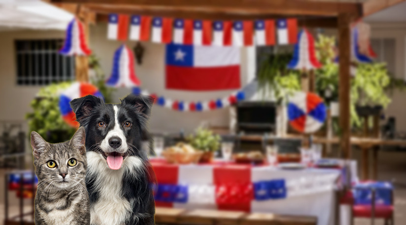

Administrador
Cerrar sesión
Noticias y consejos
Información útil para el cuidado de tus mascotas

04 Septiembre 2026 · Colmevet
Consultas veterinarias de urgencia se disparan en Fiestas Patrias
Empanadas, choripanes, hilo curado y fondas ruidosas: la lista de "enemigos" del 18 que todo dueño de mascota debería conocer.
22 Julio 2026 · Colvemet
Animales callejeros, resultado de la irresponsabilidad nacional
Intenso debate generó un proyecto de ley que buscaba declarar a los perros “asilvestrados” como especie exótica invasora y permitir su caza.